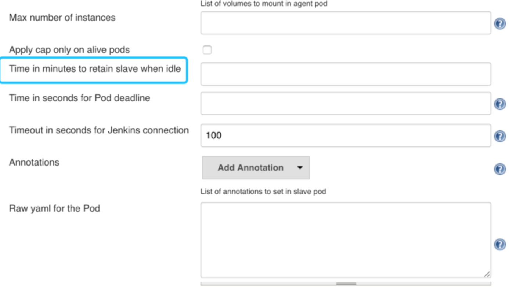

基于 Jenkins 的 CI/CD (一)
安装
基于Kubernetes来做CI/CD，当然我们这里需要将 Jenkins 安装到 Kubernetes 集群当中，新建一个 Deployment：jenkins.yaml
---
apiVersion: "extensions/v1beta1"
kind: "Deployment"
metadata:
annotations:
deployment.kubernetes.io/revision: "4"
describe: "jenkins"
generation: 1
labels:
ksyun-app: "jenkins"
name: "jenkins"
namespace: "jenkins"
spec:
minReadySeconds: 10
progressDeadlineSeconds: 2147483647
replicas: 1
revisionHistoryLimit: 2147483647
selector:
matchLabels:
ksyun-app: "jenkins"
strategy:
rollingUpdate:
maxSurge: 1
maxUnavailable: 1
type: "RollingUpdate"
template:
metadata:
labels:
ksyun-app: "jenkins"
spec:
containers:
- env:
#- name: "JAVA_TOOL_OPTIONS"
# value: "-Dfile.encoding=UTF-8 -Dsun.jnu.encoding=UTF-8"
- name: "JAVA_OPTS"
value: -Djava.awt.headless=true -Dhudson.slaves.NodeProvisioner.MARGIN0=0.85 -Duser.timezone=GMT+08
# value: -Djava.awt.headless=true -Xmx1024m -XshowSettings:vm -Dhudson.slaves.NodeProvisioner.initialDelay=0 -Dhudson.slaves.NodeProvisioner.MARGIN=50 -Dhudson.slaves.NodeProvisioner.MARGIN0=0.85 -Duser.timezone=GMT+08
# -Xmx1024m -XshowSettings:vm -Dhudson.slaves.NodeProvisioner.initialDelay=0
# -Dhudson.slaves.NodeProvisioner.MARGIN=50 -Dhudson.slaves.NodeProvisioner.MARGIN0=0.85
# -Duser.timezone=Asia/Shanghai
# "
#- name: "JENKINS_OPTS"
# value: "--prefix=/jenkins"
image: "jenkins/jenkins:lts"
imagePullPolicy: "Always"
securityContext:
runAsUser: 0 #设置以ROOT用户运行容器
privileged: true #拥有特权
name: "jenkins"
resources: {}
terminationMessagePath: "/dev/termination-log"
terminationMessagePolicy: "File"
volumeMounts:
- mountPath: "/var/jenkins_home"
name: "jenkins"
dnsPolicy: "ClusterFirst"
imagePullSecrets:
- name: "ksyunregistrykey"
restartPolicy: "Always"
schedulerName: "default-scheduler"
securityContext: {}
terminationGracePeriodSeconds: 30
volumes:
- hostPath:
path: "/mnt/jenkins"
type: ""
name: "jenkins"
---
apiVersion: "v1"
kind: "Service"
metadata:
annotations:
service.beta.kubernetes.io/ksc-loadbalancer-id: "9454a852-6f5d-4e74-a151-2d5043f66deb"
name: "jenkins"
namespace: "jenkins"
spec:
clusterIP: "10.254.255.121"
externalTrafficPolicy: "Cluster"
ports:
- name: "tcp-8080-8080"
port: 8080
protocol: "TCP"
targetPort: 8080
- name: "tcp-50000-50000"
port: 50000
protocol: "TCP"
targetPort: 50000
selector:
ksyun-app: "jenkins"
sessionAffinity: "None"
type: "LoadBalancer"
status:
loadBalancer:
ingress:
- ip: "10.69.67.100"
为了方便演示，我们把本节课所有的对象资源都放置在一个名为 jenkins 的 namespace 下面，所以我们需要添加创建一个 namespace：
kubectl create namespace jenkins
我们这里使用一个名为 jenkins/jenkins:lts 的镜像，这是 jenkins 官方的 Docker 镜像，然后也有一些环境变量，当然我们也可以根据自己的需求来定制一个镜像，比如我们可以将一些插件打包在自定义的镜像当中，可以参考文档：https://github.com/jenkinsci/docker，我们这里使用默认的官方镜像就行，另外一个还需要注意的是我们将容器的 /var/jenkins_home 目录挂载到了node节点上的/mnt/jenkins下
另外我们这里还需要使用到一个拥有相关权限的 serviceAccount：jenkins，我们这里只是给 jenkins 赋予了一些必要的权限，当然如果你对 serviceAccount 的权限不是很熟悉的话，我们给这个 sa 绑定一个 cluster-admin 的集群角色权限也是可以的，当然这样具有一定的安全风险：（rbac.yaml）
---
apiVersion: v1
kind: ServiceAccount
metadata:
name: jenkins
---
kind: Role
apiVersion: rbac.authorization.k8s.io/v1beta1
metadata:
name: jenkins
rules:
- apiGroups: [""]
resources: ["pods"]
verbs: ["create","delete","get","list","patch","update","watch"]
- apiGroups: [""]
resources: ["pods/exec"]
verbs: ["create","delete","get","list","patch","update","watch"]
- apiGroups: [""]
resources: ["pods/log"]
verbs: ["get","list","watch"]
- apiGroups: [""]
resources: ["secrets"]
verbs: ["get"]
- apiGroups: [""]
resources: ["configmap"]
verbs: ["get"]
---
apiVersion: rbac.authorization.k8s.io/v1beta1
kind: RoleBinding
metadata:
name: jenkins
roleRef:
apiGroup: rbac.authorization.k8s.io
kind: Role
name: jenkins
subjects:
- kind: ServiceAccount
name: jenkins
创建 rbac 相关的资源对象：
kubectl create -f rbac.yaml
#结果输出⏬
serviceaccount "jenkins" created
role.rbac.authorization.k8s.io "jenkins" created
rolebinding.rbac.authorization.k8s.io "jenkins" created
一切准备的资源准备好过后，我们直接创建 Jenkins 服务：
kubectl create -f jenkins.yaml
#
deployment.extensions "jenkins" created
service "jenkins" created创建完成后，要去拉取镜像可能需要等待一会儿，然后我们查看下 Pod 的状态：
kubectl get pods -n Jenkins
#
NAME READY STATUS RESTARTS AGE
jenkins-7f5494cd44-pqpzs 0/1 Running 0 2m
可以看到该 Pod 处于 Running 状态，但是 READY 值确为0，然后我们用 describe 命令去查看下该 Pod 的详细信息：
kubectl get pods -n jenkins
#
NAME READY STATUS RESTARTS AGE
jenkins-7f5494cd44-smn2r 1/1 Running 0 25s
登录
注意： 初始化过程中，让输入 /var/jenkins_home/secret/initialAdminPassword 初始密码时，因为我们设置的 NAS挂载到外部路径，可以到NAS目录中/mnt/jenkins查看。
拿到密码后，输入密码，进行下一步操作
然后选择安装推荐的插件即可。
安装完成后添加管理员帐号即可进入到 jenkins 主界面：
优点
Jenkins 安装完成了，接下来我们不用急着就去使用，我们要了解下在 Kubernetes 环境下面使用 Jenkins 有什么好处。
我们知道持续构建与发布是我们日常工作中必不可少的一个步骤，目前大多公司都采用 Jenkins 集群来搭建符合需求的 CI/CD 流程，然而传统的 Jenkins Slave 一主多从方式会存在一些痛点，比如：
- 主 Master 发生单点故障时，整个流程都不可用了
- 每个 Slave 的配置环境不一样，来完成不同语言的编译打包等操作，但是这些差异化的配置导致管理起来非常不方便，维护起来也是比较费劲
- 资源分配不均衡，有的 Slave 要运行的 job 出现排队等待，而有的 Slave 处于空闲状态
- 资源有浪费，每台 Slave 可能是物理机或者虚拟机，当 Slave 处于空闲状态时，也不会完全释放掉资源。
正因为上面的这些种种痛点，我们渴望一种更高效更可靠的方式来完成这个 CI/CD 流程，而 Docker 虚拟化容器技术能很好的解决这个痛点，又特别是在 Kubernetes 集群环境下面能够更好来解决上面的问题，下图是基于 Kubernetes 搭建 Jenkins 集群的简单示意图：
从图上可以看到 Jenkins Master 和 Jenkins Slave 以 Pod 形式运行在 Kubernetes 集群的 Node 上，Master 运行在其中一个节点，并且将其配置数据存储到一个 Volume 上去，Slave 运行在各个节点上，并且它不是一直处于运行状态，它会按照需求动态的创建并自动删除。
这种方式的工作流程大致为：当 Jenkins Master 接受到 Build 请求时，会根据配置的 Label 动态创建一个运行在 Pod 中的 Jenkins Slave 并注册到 Master 上，当运行完 Job 后，这个 Slave 会被注销并且这个 Pod 也会自动删除，恢复到最初状态。
那么我们使用这种方式带来了哪些好处呢？
- 服务高可用，当 Jenkins Master 出现故障时，Kubernetes 会自动创建一个新的 Jenkins Master 容器，并且将 Volume 分配给新创建的容器，保证数据不丢失，从而达到集群服务高可用。
- 动态伸缩，合理使用资源，每次运行 Job 时，会自动创建一个 Jenkins Slave，Job 完成后，Slave 自动注销并删除容器，资源自动释放，而且 Kubernetes 会根据每个资源的使用情况，动态分配 Slave 到空闲的节点上创建，降低出现因某节点资源利用率高，还排队等待在该节点的情况。
- 扩展性好，当 Kubernetes 集群的资源严重不足而导致 Job 排队等待时，可以很容易的添加一个 Kubernetes Node 到集群中，从而实现扩展。
是不是以前我们面临的种种问题在 Kubernetes 集群环境下面是不是都没有了啊？看上去非常完美。
配置
接下来我们就需要来配置 Jenkins，让他能够动态的生成 Slave 的 Pod。
- 我们需要安装kubernetes plugin， 点击 Manage Jenkins -> Manage Plugins -> Available -> Kubernetes plugin 勾选安装即可。
注意:
在准备第2步安装前,我们需要先拿到K8S集群kube/config的配置文件。至于为什么，因为我们接下来会用到
apiVersion: v1
clusters:
- cluster:
certificate-authority-data: **********
server: https://172.**.**.96:6443
name: cluster-52577a67-c897-4c30-b807-e963e6ce95b1
contexts:
- context:
cluster: cluster-52577a67-c897-4c30-b807-e963e6ce95b1
user: admin-52577a67-c897-4c30-b807-e963e6ce95b1
name: context-52577a67-c897-4c30-b807-e963e6ce95b1
current-context: context-52577a67-c897-4c30-b807-e963e6ce95b1
kind: Config
preferences: {}
users:
- name: admin-52577a67-c897-4c30-b807-e963e6ce95b1
user:
client-certificate-data: *******
client-key-data: **********
- 安装完毕后，点击 Manage Jenkins —> Configure System —> (拖到最下方)Add a new cloud —> 选择 Kubernetes，然后填写 Kubernetes 和 Jenkins 配置信息。
请看下图所示⏬，Kubernetes 服务证书 key 这个位置需要填写的就是，config配置文件中 certificate-authority-data: Base64解码后得到的。
- 凭据 配置方法
注意 namespace，我们这里填 default，然后点击Test Connection，如果出现 Connection test successful 的提示信息证明 Jenkins 已经可以和 Kubernetes 系统正常通信了，然后下方的 Jenkins URL 地址：http://10.69.67.100:8080/，这里的格式为：服务名.namespace.svc.cluster.local:8080，根据上面创建的jenkins 的服务名填写，我这里是之前创建的名为jenkins
- 配置 Pod Template，其实就是配置 Jenkins Slave 运行的 Pod 模板，命名空间我们同样是用 kube-ops，Labels 这里也非常重要，对于后面执行 Job 的时候需要用到该值，由于我们使用的场景是Java环境，所以我们这里使用的是 registry.cn-beijing.aliyuncs.com/jenkins-k8s-pip/jnlp-slave:4.3-1-jdk11这个镜像，这个镜像是在官方的 jnlp 镜像基础上定制的，加入了 kubectl 等一些实用的工具。
由于我们所要使用的工具有mvn、docker build、kubectl 所以将会把所使用的的命令挂载到容器内，请看下图⏬
- maven 是为了Java打包使用
- /var/run/docker.sock，该文件是用于 Pod 中的容器能够共享宿主机的 Docker，这就是大家说的 docker in docker 的方式，Docker 二进制文件我们已经打包到上面的镜像中了
- kubectl-model目录，为了让我们能够在 Pod 的容器中能够使用 kubectl 工具来访问我们的 Kubernetes 集群，方便我们后面在 Slave Pod 部署 Kubernetes 应用。
另外还有几个参数需要注意，如下图中的Time in minutes to retain slave when idle，这个参数表示的意思是当处于空闲状态的时候保留 Slave Pod 多长时间，这个参数最好我们保存默认就行了，如果你设置过大的话，Job 任务执行完成后，对应的 Slave Pod 就不会立即被销毁删除。

另外一些同学在配置了后运行 Slave Pod 的时候出现了权限问题，因为 Jenkins Slave Pod 中没有配置权限，所以需要配置上 ServiceAccount，在 Slave Pod 配置的地方点击下面的高级，添加上对应的 ServiceAccount 即可：
Jenkins Pipeline 介绍
要实现在 Jenkins 中的构建工作，可以有多种方式，我们这里采用比较常用的 Pipeline 这种方式。Pipeline，简单来说，就是一套运行在 Jenkins 上的工作流框架，将原来独立运行于单个或者多个节点的任务连接起来，实现单个任务难以完成的复杂流程编排和可视化的工作。
Jenkins Pipeline 有几个核心概念：
- Node：节点，一个 Node 就是一个 Jenkins 节点，Master 或者 Agent，是执行 Step 的具体运行环境，比如我们之前动态运行的 Jenkins Slave 就是一个 Node 节点
- Stage：阶段，一个 Pipeline 可以划分为若干个 Stage，每个 Stage 代表一组操作，比如：Build、Test、Deploy，Stage 是一个逻辑分组的概念，可以跨多个 Node
- Step：步骤，Step 是最基本的操作单元，可以是打印一句话，也可以是构建一个 Docker 镜像，由各类 Jenkins 插件提供，比如命令：sh ‘make’，就相当于我们平时 shell 终端中执行 make 命令一样。
那么我们如何创建 Jenkins Pipline 呢？
- Pipeline 脚本是由 Groovy 语言实现的，但是我们没必要单独去学习 Groovy，当然你会的话最好
- Pipeline 支持两种语法：Declarative(声明式)和 Scripted Pipeline(脚本式)语法
- Pipeline 也有两种创建方法：可以直接在 Jenkins 的 Web UI 界面中输入脚本；也可以通过创建一个Jenkinsfile 脚本文件放入项目源码库中
- 一般我们都推荐在 Jenkins 中直接从源代码控制(SCMD)中直接载入 Jenkinsfile Pipeline 这种方法
创建一个简单的 Pipeline
我们这里来给大家快速创建一个简单的 Pipeline，直接在 Jenkins 的 Web UI 界面中输入脚本运行。
- 新建 Job：在 Web UI 中点击 New Item -> 输入名称：pipeline-demo -> 选择下面的 Pipeline -> 点击 OK
- 配置：在最下方的 Pipeline 区域输入如下 Script 脚本，然后点击保存。
node { stage('Clone') { echo "1.Clone Stage" } stage('Test') { echo "2.Test Stage" } stage('Build') { echo "3.Build Stage" } stage('Deploy') { echo "4. Deploy Stage" } } - 构建：点击左侧区域的 Build Now，可以看到 Job 开始构建了
隔一会儿，构建完成，可以点击左侧区域的 Console Output，我们就可以看到如下输出信息：
我们可以看到上面我们 Pipeline 脚本中的4条输出语句都打印出来了，证明是符合我们的预期的。
如果大家对 Pipeline 语法不是特别熟悉的，可以前往输入脚本的下面的链接Pipeline Syntax中进行查看，这里有很多关于 Pipeline 语法的介绍，也可以自动帮我们生成一些脚本。
在 Slave 中构建任务 《主题》
上面我们创建了一个简单的 Pipeline 任务，但是我们可以看到这个任务并没有在 Jenkins 的 Slave 中运行，那么如何让我们的任务跑在 Slave 中呢？还记得上节课我们在添加 Slave Pod 的时候，一定要记住添加的 label 吗？没错，我们就需要用到这个 label，我们重新编辑上面创建的 Pipeline 脚本，给 node 添加一个 label 属性，
这里给出参照：
这里给出大家想要的，利用Jenkins的pipeline构建CI/CD的脚本。
podTemplate(label: 'jnlp-slave', cloud: 'kubernetes')
{
node ('jnlp-slave') {
stage('git-maven') {
sh '''
export MAVEN_HOME=/maven
export PATH=$MAVEN_HOME/bin:$PATH
'''
checkout([$class: 'GitSCM', branches: [[name: '*/$branch']], doGenerateSubmoduleConfigurations: false, extensions: [], submoduleCfg: [], userRemoteConfigs: [[credentialsId: 'e0574254-769a-46c7-a7d3-10dcb90c8d2b', url: 'http://newgit.****.com/reo***use/ai***s.git']]])
sh '''
/maven/bin/mvn clean install -Dmaven.test.skip=true
ls *
'''
}
stage('docker_build') {
withCredentials([usernamePassword(credentialsId: 'a6e1a852-7dfa-4489-ab69-465ccccf6352', passwordVariable: 'PASSWORD', usernameVariable: 'USERNAME')]) {
sh "docker login registry.cn-beijing.a*****.com -u $USERNAME -p $PASSWORD"
}
sh '''
PROJECT_NAME="aiot-oss"
PORT="8971"
DOCKER_IMG="registry.cn-beijing.aliyuncs.com/ho*****c"
mv target/*.jar ./kubernetes
cd kubernetes
TAG=$(date +%y%m%d%H%M)
docker build -t ${PROJECT_NAME}:$TAG .
docker tag aiot-oss:$TAG $DOCKER_IMG/${PROJECT_NAME}:$TAG
docker push $DOCKER_IMG/${PROJECT_NAME}:$TAG
echo "推送镜像到金山云仓库成功"
echo "开始development"
if [ $branch = hyhtest ];
then
cp -r /kubectl/pre/.kube /root/
echo "is pre"
else
cp -r /kubectl/pro/.kube /root/
echo "is master"
fi
cp /kubectl/kubectl /usr/local/bin/
cp -r /kubectl/yaml ./
sed -i "s#IMG_NAME:IMG_TAG#${DOCKER_IMG}/${PROJECT_NAME}:$TAG#g" yaml/*
sed -i "s#project_name#${PROJECT_NAME}#g" yaml/*
sed -i "s#_port_#${PORT}#g" yaml/*
number=$(kubectl get pods -n default | awk '{print $1}' | grep ${PROJECT_NAME}|wc -l)
if [ $number != 0 ];then kubectl delete -f ./yaml && kubectl create -f ./yaml ;else kubectl create -f ./yaml ;fi
sleep 60s
kubectl get all -n default | grep ${PROJECT_NAME}
'''
}
}
}
大家拿到脚本后所需要更改的地方有⏬：
- Git clone方法 checkout
- docker仓库登录方法 withCredentials
- 项目中所要使用的变量，PROJECT_NAME、PORT、DOCKER_IMG
- yaml模板需要自己编排
这里提供一下自己配置的编排模板，仅供参考
---
apiVersion: "extensions/v1beta1"
kind: "Deployment"
metadata:
labels:
ksyun-app: "project_name"
name: "project_name"
namespace: "default"
spec:
minReadySeconds: 38
progressDeadlineSeconds: 2147483647
replicas: 2
revisionHistoryLimit: 2147483647
selector:
matchLabels:
ksyun-app: "project_name"
strategy:
rollingUpdate:
maxSurge: 1
maxUnavailable: 1
type: "RollingUpdate"
template:
metadata:
labels:
ksyun-app: "project_name"
spec:
containers:
- args:
- "start.sh"
command:
- "sh"
env:
- name: "profiles"
value: "ENV"
image: "IMG_NAME:IMG_TAG"
imagePullPolicy: "Always"
securityContext:
runAsUser: 0 #设置以ROOT用户运行容器
privileged: true
livenessProbe:
failureThreshold: 3
initialDelaySeconds: 35
periodSeconds: 20
successThreshold: 1
tcpSocket:
port: _port_
timeoutSeconds: 20
name: "project_name"
readinessProbe:
failureThreshold: 3
initialDelaySeconds: 30
periodSeconds: 20
successThreshold: 1
tcpSocket:
port: _port_
timeoutSeconds: 20
name: "project_name"
resources:
limits:
cpu: "1"
memory: "2Gi"
requests:
cpu: "1"
memory: "2Gi"
terminationMessagePath: "/dev/termination-log"
terminationMessagePolicy: "File"
dnsPolicy: "ClusterFirst"
imagePullSecrets:
- name: "ksyunregistrykey"
restartPolicy: "Always"
schedulerName: "default-scheduler"
securityContext: {}
terminationGracePeriodSeconds: 30
集群内网的service服务
---
apiVersion: "v1"
kind: "Service"
metadata:
name: "project_name"
namespace: "default"
spec:
ports:
- port: _port_
protocol: "TCP"
targetPort: _port_
selector:
ksyun-app: "project_name"
sessionAffinity: "None"
type: "ClusterIP"
status:
loadBalancer: {}